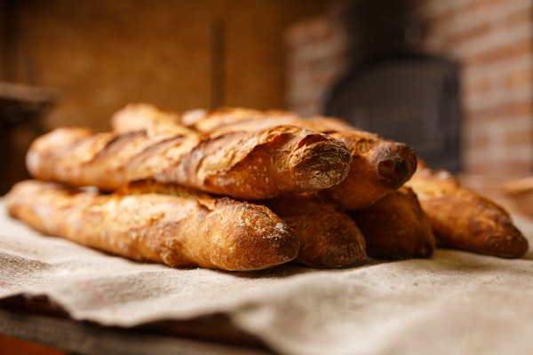

For every bread, or every food that is, you always start with: the ingredients. For making the simplest of breads (not taking into account flatbreads, only yeast risen breads), you only need: Flour (most common is wheat flour): there are a lot of different flours, if using wheat flour, choose a bread flour or all purpose flour (not cake flour) or a whole wheat flour, there are a lot of choices (bread flour, and browse through to see all the other types!) Water Yeast Now that we’ve got our ingredients, it’s time to mix them! Even though mixing sounds simple (and of course, at the core it is!) it’s a very important step. When making bread it greatly helps to mix the dry ingredients first (without any filling though such as raisins, etc.) before adding the wet ingredients (such as water, butter, milk). Mixing doesn’t cost any effort/energy as long as there are no wet ingredients. So not adding the wet while you’re still mixing the dry saves effort. Mixing assures all ingredients are spread out oer the bread evenly. It assures yeast is spread out through the entire dough and thus makes it evenly fluffy. Also, it ensures the salt is mixed through evenly. Since too much salt will prevent growth of yeast, it prevents (local) inhibition of yeast growth. Even mixing should be done with care. Yeast can be killed if the moisture added is too hot. Take warm water, but only as warm as you can touch and drink. Boiling water or any water well above 40°C will kill the yeast. Once a dough has been made it is ready for its first rise, also called bulk or first fermentation. As mentioned in the kneading stage: in order to make a fluffy bread air pockets have to be made. These are grown through fermentation of the yeast. Yeast consume sugars (glucose) and converts this into energy. While doing this carbon dioxide (CO2) is formed. This is a gas and causes the dough to expand. Now the bread is ready to rise again, however, since it has been shaped quite carefully, it is important that it is risen in such a way that it can rise and be moved without ruining the shape. You don’t want bread sticking to anything that won’t enter the oven with the bread. The simplest way to rise the bread is on the baking tray you’ll be using to bake it on. However, not all bread will keep their shape on the tray. Another option is to proof the bread in the baking pan, but this does tend to increase the risk of the dough sticking to the pan after baking, nor does it allow you to pre-heat to the baking tray. This is why a lot of bakers use bread baskets which have been floured quite heavily to proof the dough. The flouring prevents the dough from sticking, allowing you to transfer it once it’s been proven for long enough. Now the bread is ready to rise again, however, since it has been shaped quite carefully, it is important that it is risen in such a way that it can rise and be moved without ruining the shape. You don’t want bread sticking to anything that won’t enter the oven with the bread. The simplest way to rise the bread is on the baking tray you’ll be using to bake it on. However, not all bread will keep their shape on the tray. Another option is to proof the bread in the baking pan, but this does tend to increase the risk of the dough sticking to the pan after baking, nor does it allow you to pre-heat to the baking tray. This is why a lot of bakers use bread baskets which have been floured quite heavily to proof the dough. The flouring prevents the dough from sticking, allowing you to transfer it once it’s been proven for long enough. Nothing much to say her! The most essential part of the bread making process. Take the bread out of the oven. Let it cool (slicing hot bread is recipe for disaster, it will fall apart so easily) and enjoy! Study & improve Once you’ve made your first breads, keep on improving the process. Here we advise a few books that can help you get even better in baking bread. Brilliant Bread: a bread baking book for the beginning/intermediate home baker Modernist bread: If you’re really passionate about bread, this would be a great bread for you. The authors have virtually tested just about everything for making bread. They’ve also made a podcast which might be a more budget friendly matter of getting acquainted with them. Professional bread making: For the professional bread maker, looking for some more background
 MORE